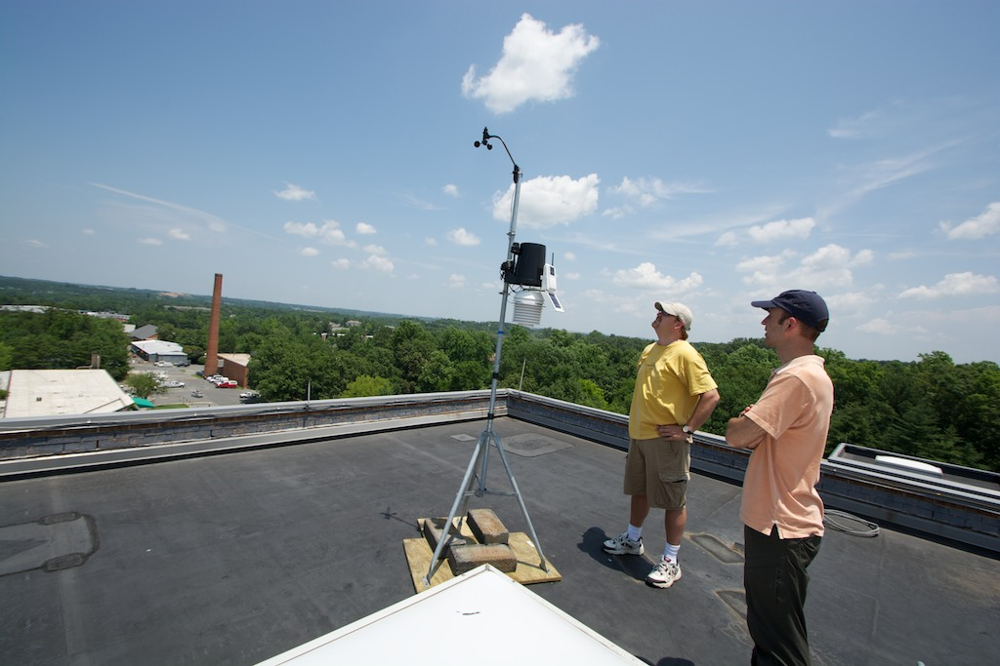

Where is the weather station?
On top of the McEniry building near Prospector on the UNC Charlotte main campus. (map)
What is the weather station?
The station on the roof of McEniry is a Davis Vantage Pro II. The instruments measure air temperature, dewpoint temperature, air pressure, rain, wind speed and direction, and sunlight. From these measurements, other weather-related parameters are derived, including heat index, wind chill, rain rate, relative humidity, and climatology-related parameters like temperature and rain amounts for days, months, and years.
Who should I contact about weather station questions?
Faculty contacts are Dr Brian Magi (web, twitter) and Dr Matt Eastin (web). Student contact is Warren Pettee (twitter, web)
Who should I contact about weather questions?
Lots of people! Faculty contacts are Brian Magi (web, twitter), Matt Eastin (web), Casey Davenport (web), and Terry Shirley (web). John Wendel (from CNBC) also teaches our Broadcasting Meteorology course and is often on campus during those semesters. In addition to faculty, the Meteorology program has about 60 Meteorology majors working on their degrees that can help too. The UNCC Weather Twitter account (not affiliated with the university) is a great resource of weather information and is run by Matt Toadvine, a UNC Charlotte student. Many of our students are on twitter and facebook, and they all love answering weather questions.
Who should I contact about global warming, climate, climate change, or climatology (weather averages) questions?
Dr Brian Magi, Dr Matt Eastin, Dr Casey Davenport, and Mr Terry Shirley are the best people to talk to about climate or climatology related questions. Brian Magi’s research and teaching are both related to global warming and global environmental change. Matt Eastin’s research is ranges from improving our understanding of tropical cyclones to dengue fever to urban heat islands. Every atmospheric scientist studies the Earth in a way that has to consider global warming and change, and all of us talk about how global warming affects the topics we talk about in the classroom. Terry Shirley teaches about the Earth system and weather and climate. We are all very comfortable talking about the science related to our changing climate, or talking about weather averages in the venue of climatology.
Comments or Suggestions?
Click here and send them via the online form. All suggestions are sent directly to the
website developer where it will be incorporated after approval.
Dr. Brian Magi
Assistant Professor and
Website Supervisor
McEniry 232
Email: brian dot magi at uncc dot edu
Phone: 704-687-5917
Follow
Warren Pettee
Student Developer and Content Creator
Email: wpettee at uncc dot edu
Follow
Terry Shirley
Senior Lecturer and
Undergraduate Coordinator
McEniry 232
Email: trshirle at uncc dot edu
Phone: 704-687-5966
Dr. Casey Davenport
Assistant Professor
McEniry 239
Email: casey.davenport at uncc dot edu
Phone: 704-687-5984
Department of Geography and Earth Sciences
University of North Carolina at Charlotte
Charlotte, NC 28223-0001
Dr. Matthew Eastin
Associate Professor and
Graduate Coordinator
McEniry 209
Email: mdeastin at uncc dot edu
Phone: 704-687-5966